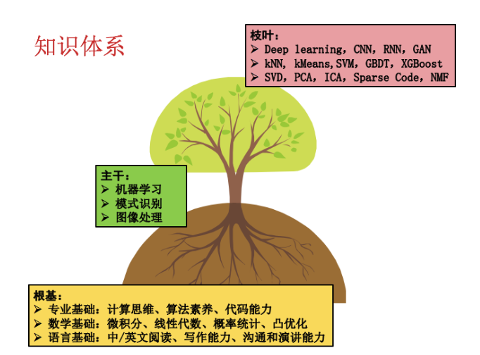

1. 实验室研究方向：
本实验室的研究方向属于计算机视觉与人工智能，
研究兴趣包括计算机视觉、机器学习、智慧水利三个领域的理论模型、算法和应用。本实验室研究生的知识体系大致如下：

2. 训练思想：
2.1 对于人工智能学科而言，算法思维和代码能力是不可或缺的“内功”，需要持之以恒地训练；算法思维指导代码编写，代码实验验证算法正确与否，二者相辅相成，不可或缺；
2.2 基础知识体系是从事科学研究和工程项目的“养料”，基础不牢，则可持续发展能力堪忧，各位同学务必在暑假提高自己的基础能力，完成本科生到研究生的角色转变；
3. 推荐学习内容：
3.1 数学基础
• 推荐清华大学出版社方保镕等编著的《矩阵论》一书
• 学习《Introductionto Mathematical Statistics》，第六版，Hogg著
• 自学《算法设计与问题求解-编程实践》 李清勇编：巩固数据结构知识，学会STL的应用；了解和掌握基本的算法思维，学会应用这些方法去分析和解决问题。
3.2 专业基础 （人工智能方面）
• 硕士生自学《机器学习》（ 周志华著），博士研究生自学 《Pattern Recognition and Machine Learning》（ Bishop著），了解机器学习的知识体系，理解基本概念和经典模型。
• 可参考《统计学习方法》（李航）：比较全面和概要的阐述了统计机器学习的概念、模型和方法，有利于快速建立机器学习的全貌认知。
• 学习吴恩达的视频公开课。
3.3 专业基础 （计算机视觉方面）
• 自学OpenCV：下载OpenCV的最新版本，在安装目录的 \build\doc下有一个教程： opencv_tutorials.pdf，自学该教程的前4章。
• 自学《TensorFlow：实战Google深度学习框架（第2版）》，了解深度学习的经典模型、算法和应用场景。
• 与老师讨论一次，尽早确定项目内容，阅读小方向方面的经典论文。
3.4 其他基础
• 阅读数篇英文阅读，渡过论文阅读关
• 学习使用google scholar和google，渡过知识检索关
• 自学 《Style Toward Clarity and Grace》，学会地道的英文表达方式，英语写作是博士生必须修炼的技能。
4. 作业要求：
• 开学后，每位同学需进行一次ppt，报告自己暑期学习内容，主要内容可为自己阅读的一篇经典cv小方向文章（需来自近两年三大会iccv，cvpr和eccv）的理解。如太过粗糙，将会重做，务必重视